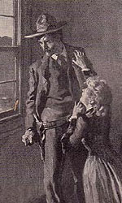
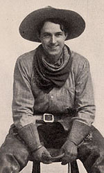
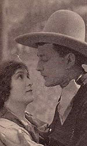
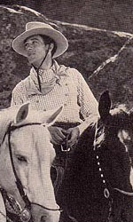

|
These 8 illustrations by Arthur L. Keller were published in the first editions of the novel -- New York: The Macmillan Company, 1902.
These 15 photographs of the dramatization of the novel were published in a special theatrical edition "illustrated by scenes and characters from the play" -- New York: The Macmillan Company, 1904. (COURTESY THE CLIFTON WALLER BARRET COLLECTION | UVA)
In 1911 the Macmillan Company brought out a very limited edition (100 signed copies) of The Virginian with these 9 illustrations by Frederic Remington, the country's most famous "western" artist. (COURTESY THE CLIFTON WALLER BARRET COLLECTION | UVA)
Four images from the 1911 Preferred Pictures film version, published (along the other illustrations) by Grossett & Dunlap (New York: 1911).
Four images from the 1925 Paramount Pictures film version, published (along the other illustrations) by Grossett & Dunlap (New York: 1925).
The images below are from a Grosset & Dunlap 1935 edition. The first, the frontispiece, is one of the Frederick Remington drawings that first appeared in The Virginian in the 1911 limited edition above. The remaining part-page drawings, by Charles M. Russel, began appearing in Grosset & Dunlap's and Macmillan's editions at least as early as 1911, and perhaps earlier. The list below is about a third the total number.
|